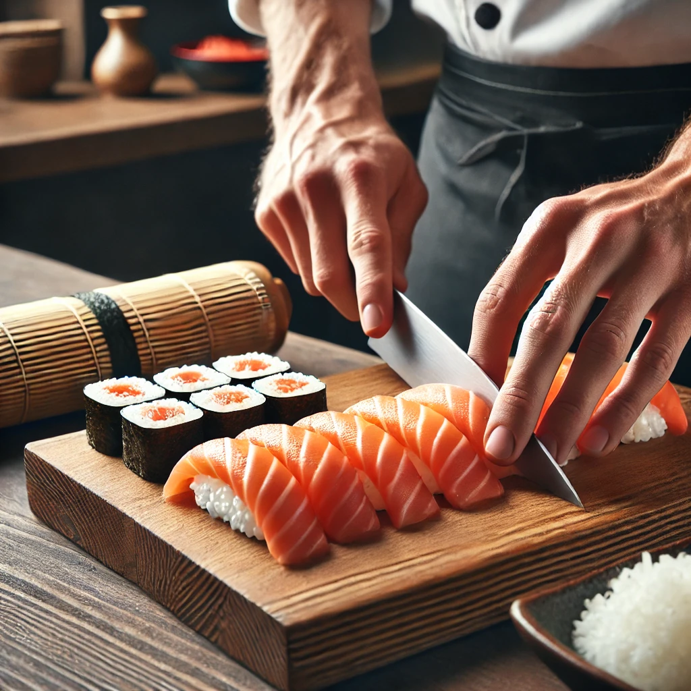
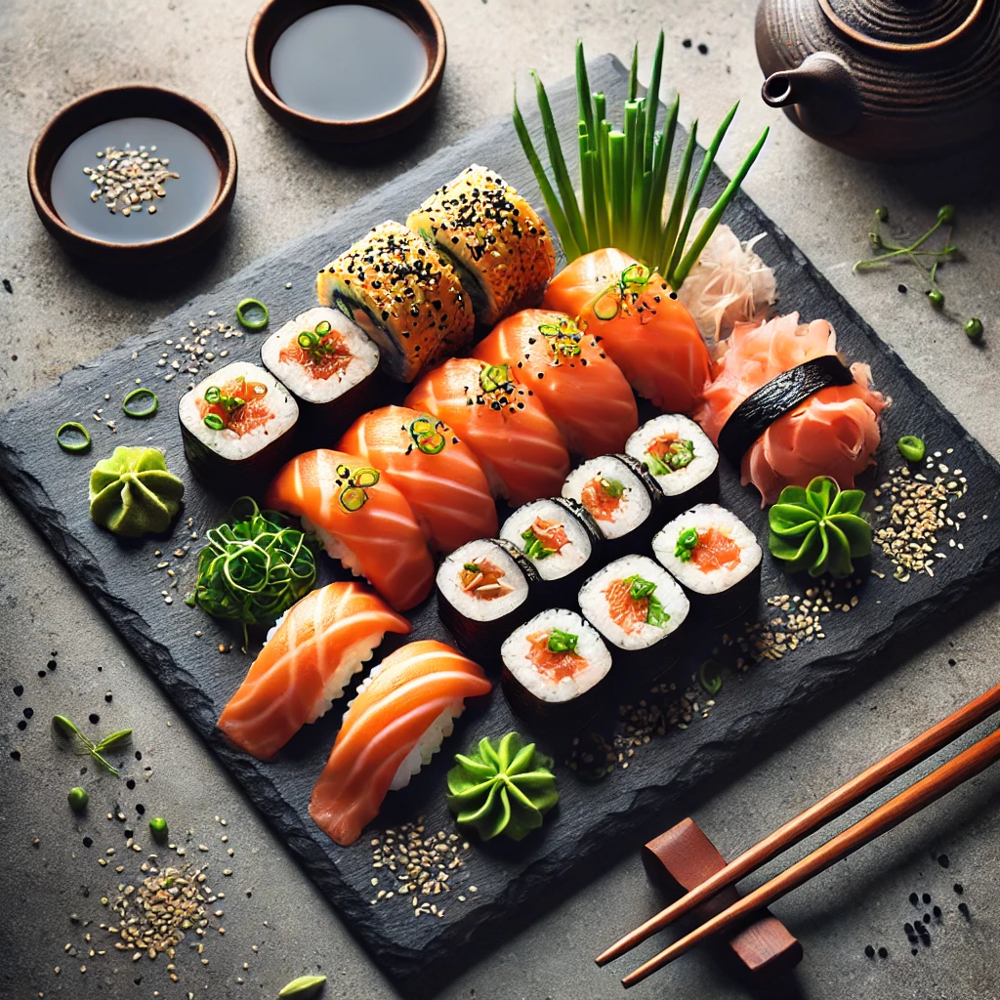

Sushi de Salmón
Ingredientes
- Arroz para sushi
- Vinagre de arroz
- Azúcar y sal
- Salmón fresco
- Alga nori
- Wasabi y jengibre encurtido
- Salsa de soja
Historia y Curiosidades
El sushi de salmón se popularizó en Japón en el siglo XX gracias a la influencia noruega, que promovió el consumo de salmón crudo en sushi. Hoy en día, es uno de los tipos de sushi más apreciados en todo el mundo.
Modo de Elaboración
Para preparar sushi de salmón, se cocina y sazona el arroz con vinagre, azúcar y sal. Luego, se corta el salmón en finas láminas y se coloca sobre el arroz prensado. Finalmente, se acompaña con wasabi, jengibre encurtido y salsa de soja.
Galería


Video de Elaboración
Precio: 12€